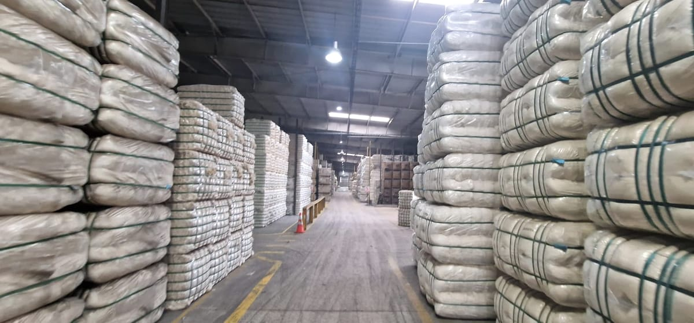
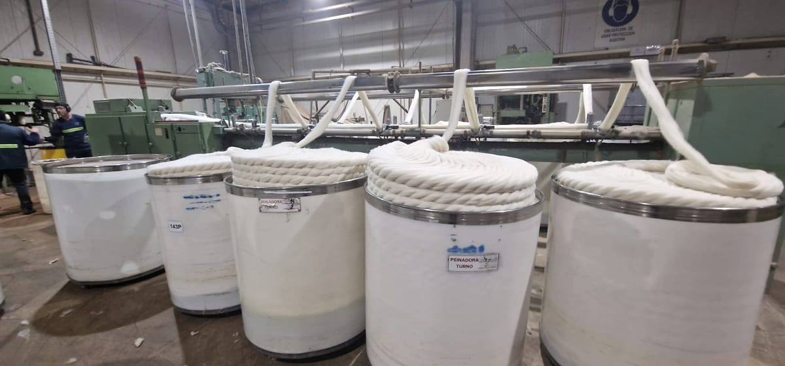
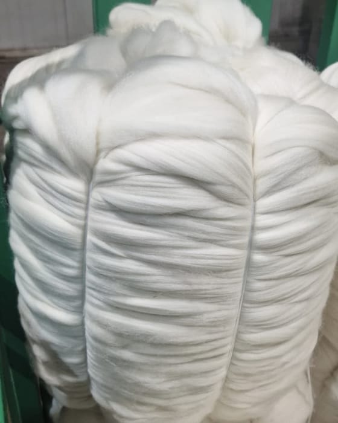
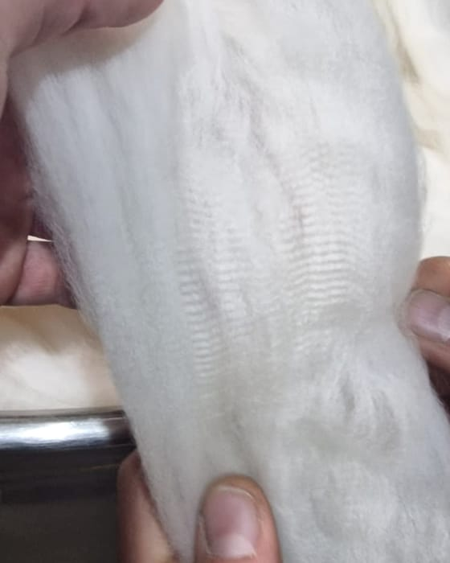
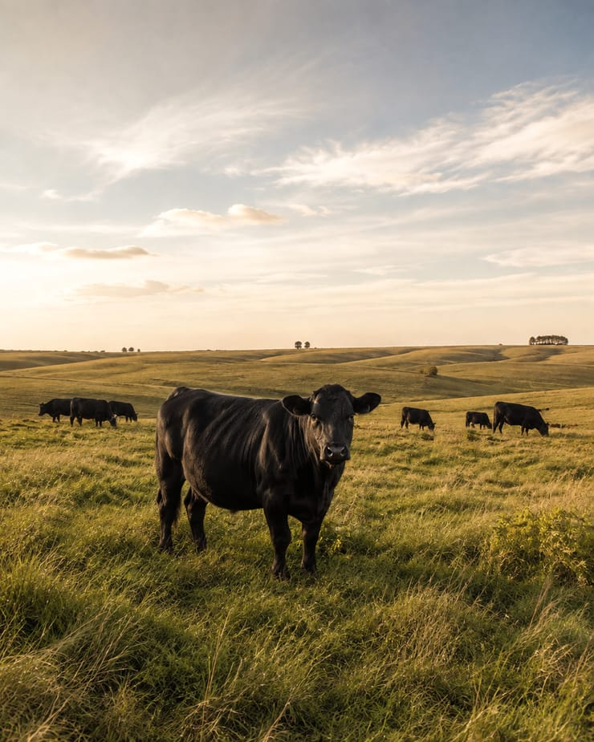
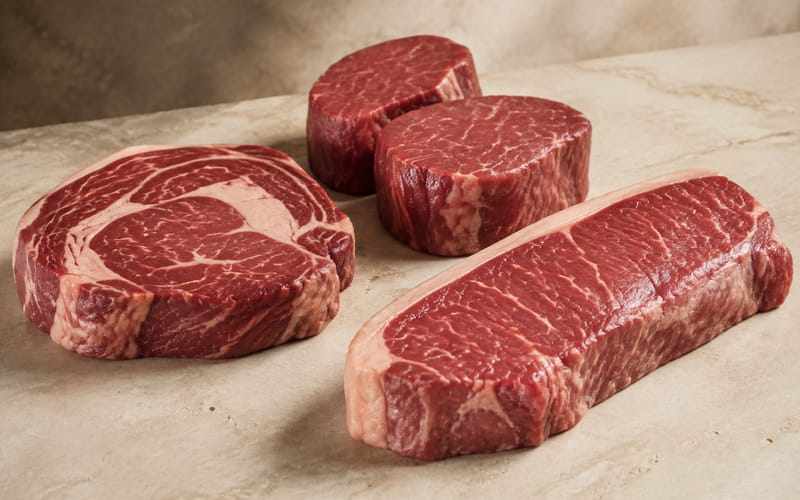
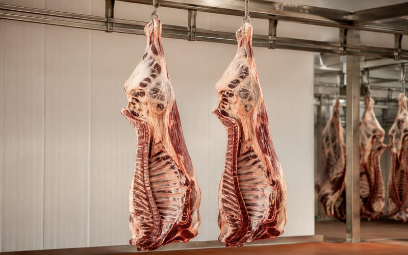
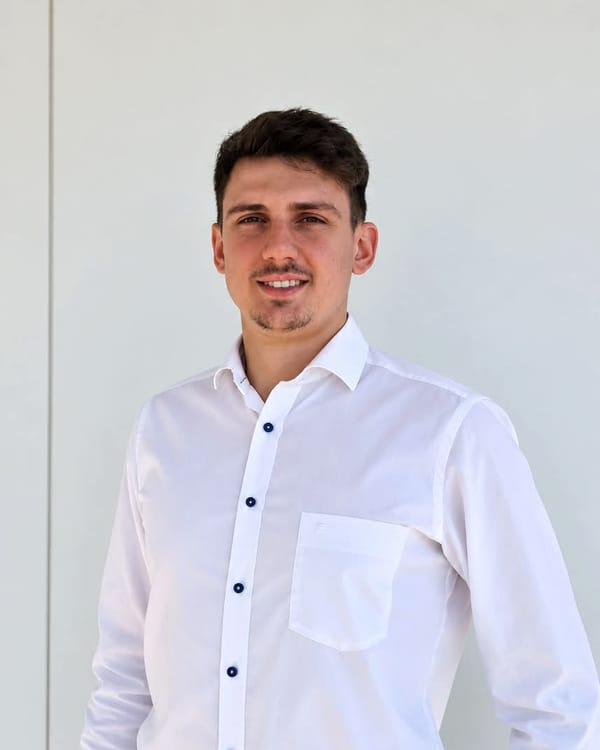
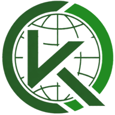

Kunz Sourcing · San José, Uruguay
Sourcing from Uruguay, handled on the ground.
Kunz Sourcing is the sourcing and export division of Kunz Global. From our base in Uruguay we identify suppliers, validate lots against your specification and coordinate shipment from the Port of Montevideo. Two product areas today: wool tops and scoured wool for the textile industry, and pasture-raised beef for European importers.

- Based in
- San José, Uruguay
- Part of
- Kunz Global, registered in Uruguay since 2025
- Product areas
- Wool & natural fibres · Beef · further categories on request
- Documentation
- Certificates and plant documents checked before every offer
Uruguay as a sourcing origin
Why professional buyers look to Uruguay.
A small country with an outsized position in agricultural exports: a pastoral farming system, an industrial base that processes at origin, and export institutions that European buyers can verify.
Kunz Sourcing does not farm, process or slaughter itself. We work with established Uruguayan mills, plants and producers and put our name on the coordination: supplier selection, validation, documentation and export.
Grown on grass, year-round
Sheep and cattle graze natural pasture in a temperate climate. Wool and beef here are products of extensive farming, not of sheds and feedlots.
Processed at origin
Uruguay is one of the world's leading exporters of wool tops, and its beef plants are inspected by the Ministry of Livestock and listed for the markets they serve, including the EU.
Independently tested and traced
IWTO-licensed laboratories test wool lots for yield, fibre diameter, vegetable matter and length. Cattle are individually identified in the national traceability system.
Reliable to trade with
An investment-grade economy with stable institutions and regular container services from Montevideo to Northern Europe and the Mediterranean.
What we source
Two product areas from one origin.
Kunz Sourcing is a sourcing unit for Uruguayan export products, not a single-product trader. Wool is the most developed area today; beef enquiries are handled with EU-approved plants; further categories follow on request. Compare both areas at a glance.



01 · Wool & natural fibres Active
Wool tops and scoured wool, produced to order.
Combed tops for worsted spinning and scoured wool for woollen processing, in the finenesses Uruguay is known for. Lots are produced against confirmed orders at a combing mill whose tops carry Oeko-Tex® Standard 100 certification, and every lot ships with a laboratory certificate.
- Product forms
- Wool tops (combed sliver) · scoured wool
- Fineness
- 17–30 micron, usual production range
- Origin
- Uruguayan clip, processed at an established combing mill
- Buyers
- Worsted and woollen spinners, wool traders, brands
- Volumes
- Approx. 12 t per 20 ft · 25 t per 40 ft · bales approx. 400 kg
- Delivery terms
- FOB Montevideo · CIF on request · typically 30–60 days



02 · Beef Enquiries open
Pasture-raised beef, sourced to specification.
Premium cuts, processing cuts and industrial beef for importers, wholesalers and processors, chilled or frozen, supplied through EU-approved Uruguayan export plants. The programme is in build-up: enquiries are handled now, and plant, specification and documentation are confirmed before we quote.
- Product forms
- Premium cuts · processing cuts · industrial beef
- Condition
- Chilled or frozen · vacuum-packed or bulk cartons
- Origin
- Pasture-raised, individually traceable cattle, Uruguay
- Supply
- EU-approved Uruguayan export plants
- Buyers
- Importers, wholesalers, food service, processors
- Volumes
- Full reefer container loads, 20 ft and 40 ft
Further agricultural raw materials, on request. If your requirement falls outside these two areas, we check supplier availability, documentation and export conditions before we say yes.
Describe your requirementHow we work
Five steps between your requirement and a loaded container.
A sourcing partner is only useful if the process is predictable. This is ours, and it is the same for a first container and a yearly programme, for wool and for beef.
- 01
Requirement
You define product form, specification, quantity, destination and timing. We reply with what is realistic from Uruguay — including what is not.
- 02
Supplier matching
We match the requirement to a producing mill or plant and confirm capacity, market listing and lead time before we quote anything.
- 03
Product validation
Specifications are checked against lot certificates and plant documentation. Samples and independent test certificates are arranged on request.
- 04
Commercial coordination
Quotation, contract and payment terms are agreed operation by operation. Pricing follows the market at the time of order.
- 05
Export coordination
With a licensed customs broker and freight forwarder in Uruguay we coordinate marking, documents and loading at the Port of Montevideo.
We do not publish price lists or minimum quantities. Raw materials are traded on the market of the day, and a serious quotation needs your specification first. Terms are discussed individually with each buyer.

Local presence. International standards.
One counterpart in Uruguay, accountable for the whole chain.
Kunz Sourcing is led by Stanley Kunz from San José, Uruguay. He visits the mill, checks lots before they are packed and is the person you reach when a question comes up — in English, German or Spanish, with working hours that overlap with Europe.
On the ground
Supplier visits, lot checks and loading supervision in person, not by phone.
Verifiable documents
Every claim we make about a lot is backed by a certificate you can read, from a laboratory or plant you can look up.
Straight answers
If Uruguay is not the right origin for a requirement, we say so early. Long-term buyers matter more to us than a single container.
Licensed partners in Uruguay
Customs brokerage, freight forwarding and tax matters are handled with established Uruguayan specialists.
Quality & documentation
Paper you can check before you commit.
No certificate, no offer. For wool these are the documents behind every lot; for beef, the supplying plant's specification and the veterinary certificate take their place.
Mill quality certificate
Wool: issued for every combing lot by the mill's laboratory.
- Fineness (Airflow)
- Hausman mean length, barbe and CVH (Almeter)
- Short-fibre content below 40 mm and 30 mm
- Sliver evenness (CV %) and residual grease
- Neps and pinpoints per 100 g
- Vegetable matter, jute and polypropylene
- Dark and coloured fibres per 25 g
Independent and official
Wool: IWTO test certificates by LATU. Beef: documents issued for the shipment.
- Wool base, vegetable matter base, mean fibre diameter and CV
- Commercial yields, clean masses, conditioning certificate
- Bale-by-bale packing list with gross, tare and net weights
- Beef: veterinary health certificate issued by MGAP
- Beef: traceability data from the national livestock system
Export file
Prepared with a licensed customs broker in Montevideo.
- Commercial invoice and packing list
- Bill of lading
- Certificate of origin as required by the destination
- Wool: mill certification Oeko-Tex® Standard 100, on request
- Beef: plant approval and product specification sheet
- Samples of the offered lot, on request
Certificate data from real lots is shown on the wool page; the beef documentation chain is explained on the beef page.

Kunz Global
A division of Kunz Global, Uruguay.
Kunz Global is the company of Stanley Kunz, registered in Uruguay since 2025 (RUT 220451740014) and based in San José. Kunz Sourcing is its sourcing and export division; the other divisions serve Uruguayan agriculture and B2B sales.
- Kunz SourcingSourcing and export from Uruguay — this siteYou are here
- Kunz AgrotechAgricultural drone services in Uruguaykunzagrotech.com
- Kunz AkquiseB2B lead generation and saleskunzakquise.com
- Kunz GlobalGroup websitekunzglobal.com
Sourcing request
Tell us what you need to buy.
The more precise your specification, the more useful our first answer. We reply within one working day with availability, lead time and the documents we can provide — or with a clear no. Product-specific forms: wool · beef.
- Stanley@kunzsourcing.com
- +49 6344 9269681Business account, messages answered from Uruguay
- Office
- Kunz Sourcing · Kunz Global
Kiyú / Libertad, 80100 San José, Uruguay - Time zone
- UTC−3 (Montevideo)Afternoons in Europe are mornings in Uruguay
- Languages
- English · German · Spanish